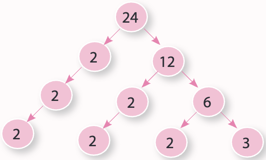

Asal Çarpanlara Ayırma
Asal sayılar, sadece 1 ve kendisine bölünebilen 1’den büyük tam sayılardır. Örneğin, 2, 3, 5, 7, 11, 13, 17 ve 19 asal sayılardır. 2, 3, 5 ve 7 ise asal rakamlardır.
Aşağıya istediğin bir sayma sayısını girip sayının asal olup olmadığını kontrol edebilirsin.
Asal Sayı Kontrolü
1’den büyük her sayı ya asaldır ya da asal sayıların çarpımı şeklinde yazılabilir. En küçük asal sayı ’dir. Ve ’den başka çift asal sayı yoktur.
Asal sayıları bulmak için başka bir yöntem de Eratosthenes Kalburu’dur. Antik Yunan matematikçi Eratosthenes tarafından geliştirilen bu yöntem, belirli bir sayıya kadar olan tüm asal sayıları bulmak için kullanılır. İşleyişi şu şekildedir:
- Liste Oluşturma: Öncelikle, 2’den başlayarak belirlenen üst sınıra kadar tüm sayılar bir liste halinde yazılır.
- Eleme İşlemi: 2’den başlanarak, her bir sayının katları (2’nin katları, 3’ün katları vb.) listeden elenir. Bu işlem, kalan sayıların asal olup olmadığını belirler.
- Asal Sayıların Belirlenmesi: Eleme işlemi tamamlandığında, listede kalan sayılar asal sayılardır.
Siz de aşağıdaki kaydırıcıyı kullanarak 2’den 300’e kadar bir sayı seçip, seçtiğiniz aralıktaki asal sayıları belirleyebilirsiniz.
Şimdi 100’e kadar toplamda asal sayı olduğunu söyleyebiliriz.
Bir sayının asal çarpanlarını asal çarpan algoritması veya asal çarpan ağacı yöntemleriyle bulabiliriz.
Örnek 1 60 sayısının asal çarpanlarını “asal çarpan algoritması” ile bulalım.
Çözüm: \begin{array}{r|l} 60 & 2 \\ 30 & 2 \\ 15 & 3\\ 5 & 5 \\ 1& \end{array} 60, 2’ye bölünür, çünkü son rakamı çifttir. 30, 2’ye bölünür, çünkü son rakamı çifttir. 15, 3’e bölünür, çünkü rakamlarının toplamı 3’e bölünür. 5, asaldır. Sonuç olarak, 60 = 2^2 \cdot 3 \cdot 5.
Örnek 2 24 sayısının asal çarpanlarını “asal çarpan ağacı” yöntemi ile bulalım.
Çözüm:

24=2\cdot 2\cdot 2 \cdot 3=2^3\cdot 3^1
Christian Goldbach tarafından 1742’de ortaya atılan Goldbach Sanısı, “2’den büyük her çift sayı, iki asal sayının toplamı olarak ifade edilebilir.” şeklindedir. Aşağıda bu sanıyı test edebilirsiniz.